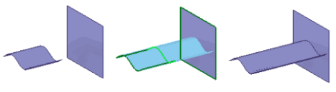
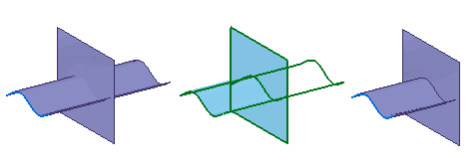
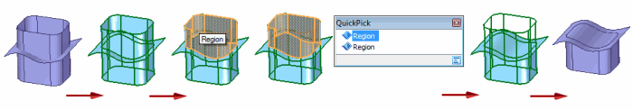
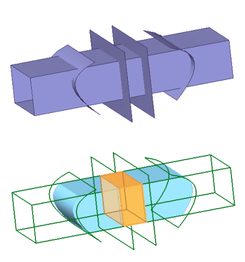
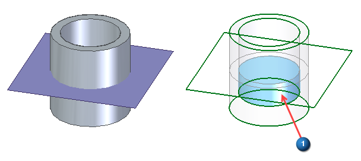
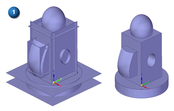
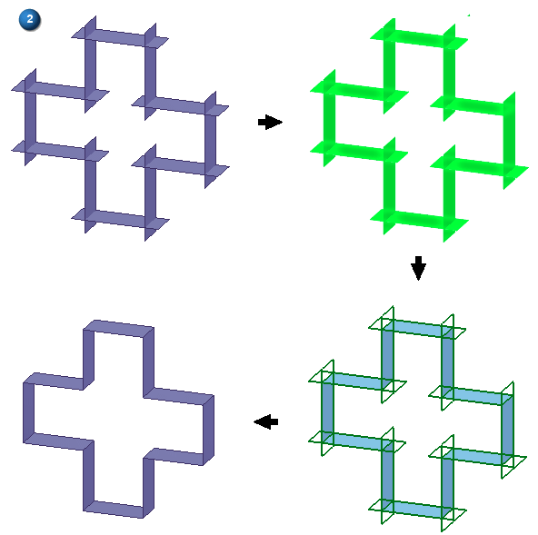
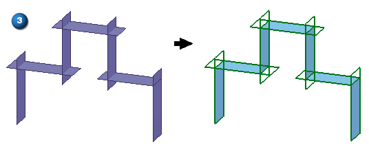

Intersect command
Use the Surfacing tab→Modify Surfaces group→Intersect command  to:
to:
-
Manually trim and extend surfaces.
-
Create design bodies from intersecting surfaces, intersecting surfaces and solid bodies, and intersecting solid bodies.
-
Auto-trim surfaces.
Manually trim and extend surfaces
You can manually extend or trim surfaces to a common intersection. You can extend surfaces up to other surface bodies. The trim capabilities support trimming multiple bodies. The Intersect command can select only surface bodies, and all surface bodies act as both a target and tool.
When selecting surface bodies, selecting only two bodies enables both Extend and Trim operations in the next step of the command. Selecting more than two bodies enables only the Trim operation.
The example below shows a surface being extended.

The example below shows a surface being trimmed.

The example below shows a surface being trimmed using the region selection.

Create design bodies from intersecting surfaces, intersecting solid bodies, and/or a combination of surfaces and solid bodies
Use the Create design bodies option on the Intersect command bar to create solid bodies from closed regions formed by intersecting surfaces and bodies and/or intersecting solid bodies.

Select the surface and/or solid bodies elements and the system returns a list of solid regions formed by the selected intersecting elements. Use the Volume Regions dialog box to control how the found solid regions are processed. You can deselect found regions and also invert the checked region list. The displayed (checked) regions are converted to solid bodies when accepted on the Intersect command bar.
Voids (1) are also detected. Void regions are formed from intersecting surfaces and solid bodies. They are also formed from intersecting solid bodies.

You can also mark the participating surfaces for consumption (deletion). The solid regions can be marked to be united into a single solid body.
This option can be a productive tool when using the Reverse Engineering functionality.
Auto-trim intersecting surfaces
Use the Auto-trim option in the Intersect command to form closed volumes (1), closed surface loops (2), or a continuous chain of surfaces (3) resulting from intersecting surfaces. The option reduces the amount of manual surface trimming required to define one of these results.



The Auto-trim option requires three or more surfaces as input to perform the trimming operation. Use Ctrl+click to add a region of the trimmed surface to the result. To remove a segment of the trimmed surface, click the segment.
How do I
Intersect a surfaceCreate a solid body from intersecting surfaces
Look up more details
Intersect command barVolume Regions dialog box